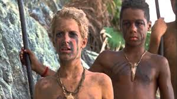

Blog #4
I’ve been having nightmares every night since Simon was murdered. In addition to that, my situation exponentially went to shreds. Piggy also died and in addition, the conch broke along with him. The conch was one of our sources of order and civilization but neither was left; there was just chaos. I lost my position as leader and practically everyone joined Jack’s tribe. People were tortured and forced to join Jack and they were hunting me down.
I was next. I expected so much better in the beginning. I expected to improve my relationship with Jack and everyone else but I’ve realized the potential for evil and lack of thinking in humans. I addition to that, I was no different. Anyone would do anything in order to survive and that includes eliminating the weak or people who get in your way. Oh poor Simon and Piggy.
Before Jack’s tribe could get to me, I stumbled at the feet of a naval officer.
I was saved from that living hell and escaped the same fate as Piggy and Simon but man my experience on the island will be a lasting scar. I now realize that the world is a tough place and that with enough motivation, humans can turn into merciless killing machines. We’d do anything to survive and lose interest in caring for others. This is why we must maintain civilization and improve quality of life or else we’ll resurrect our insane side. I shouldn’t take my life for granted anymore. My luxurious life is the result of many centuries of hard work and civilization building which were some things I couldn’t accomplished.